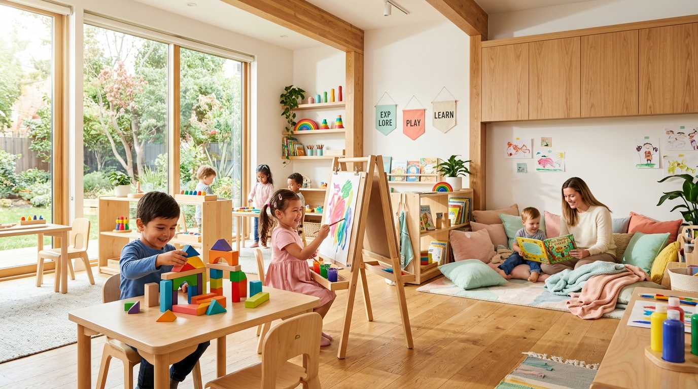
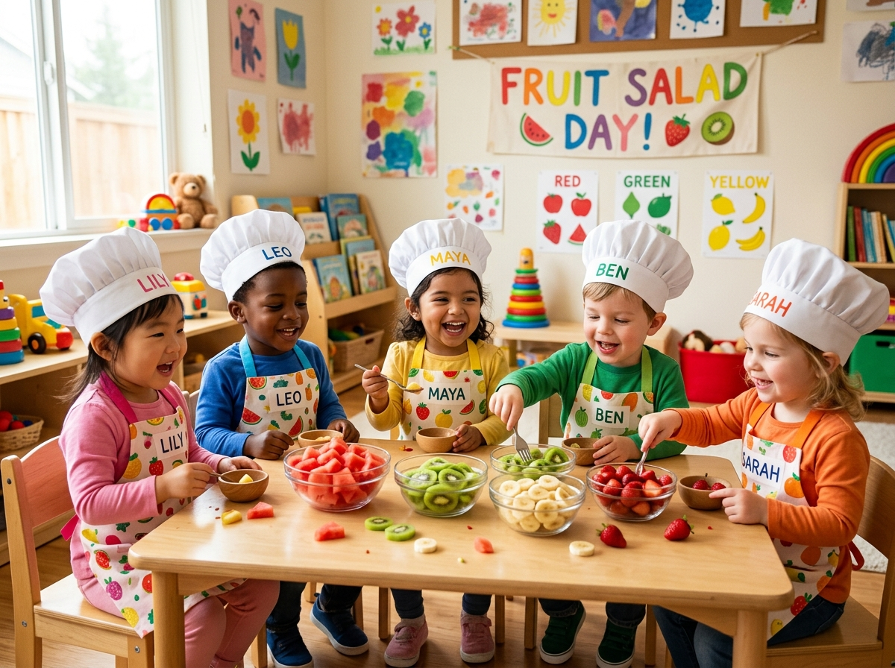
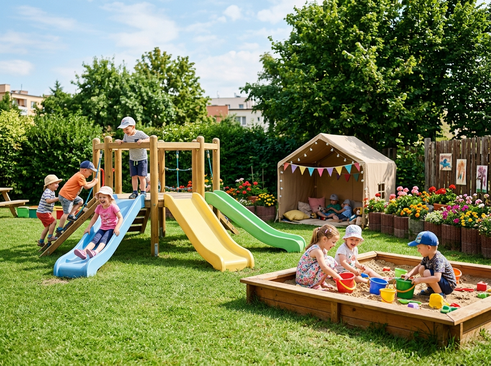
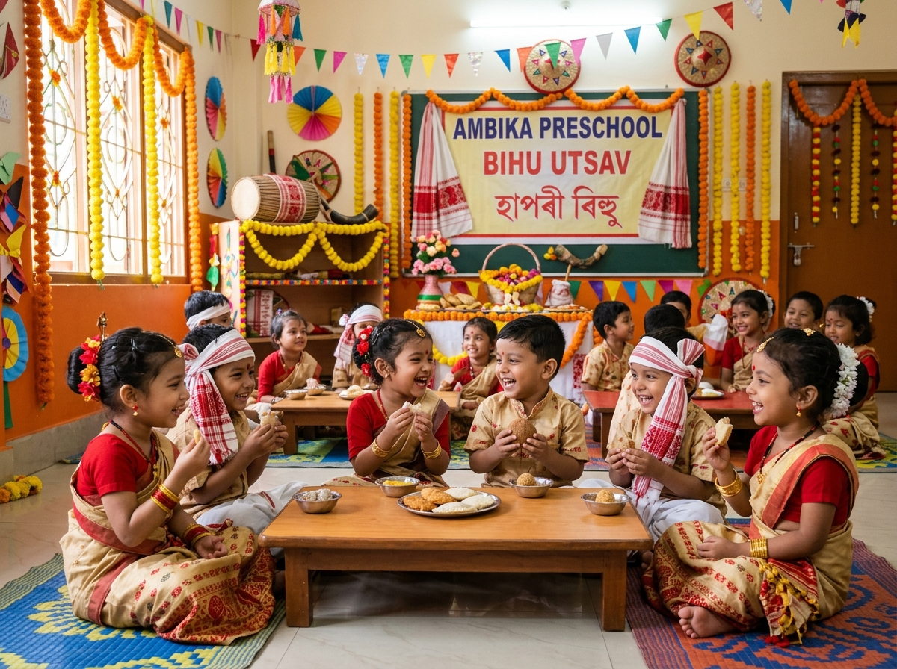

Age-appropriate learning experiences designed to celebrate every stage of your child's cognitive, emotional, and social development.
For many toddlers, Playgroup is the very first time experiencing the world beyond home. We focus on comfort, unconditional affection, sensory discovery, and gentle transition into school routines.
Morning: 8:30 AM – 11:30 AM
Class Ratio: 1 Teacher : 8 Toddlers
Includes morning fruit & snack time.


Nursery ignites communicative confidence! Toddlers expand vocabulary through expressive storytelling, puppet theaters, easel painting, and hands-on pre-math games.
Morning: 8:30 AM – 12:00 PM
Class Ratio: 1 Teacher : 10 Students
Includes outdoor playground time.
Junior KG is where foundational literacy and logic bloom! Children explore phonics sounds, number recognition, simple science experiments, and independent decision making.
Morning: 8:30 AM – 12:30 PM
Includes library & reading nook session.


Our graduating class! Senior KG equips little leaders with sentence reading, basic addition/subtraction, stage confidence, and readiness for standard grade schools.
Morning: 8:30 AM – 1:00 PM
Focus on structured school readiness.